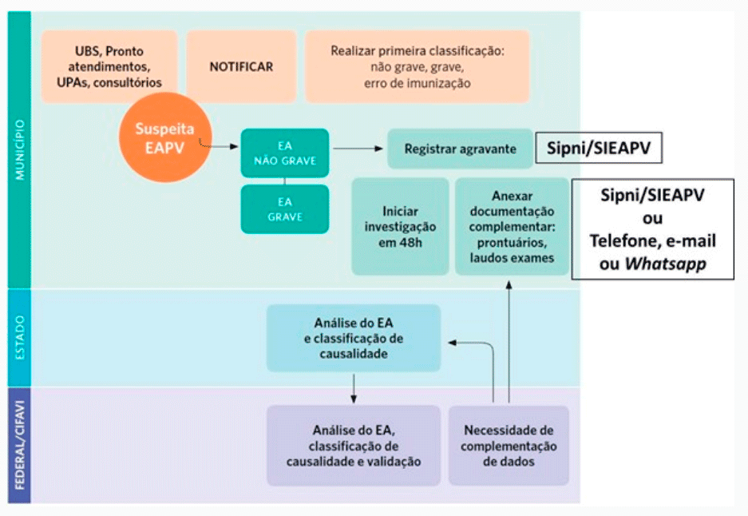
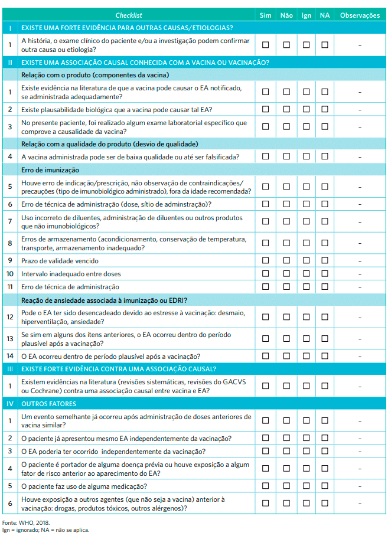
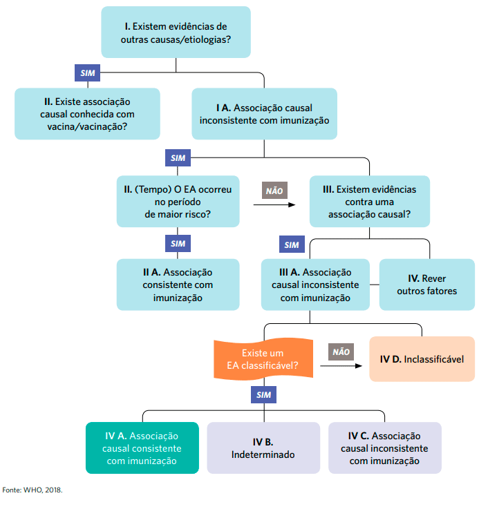
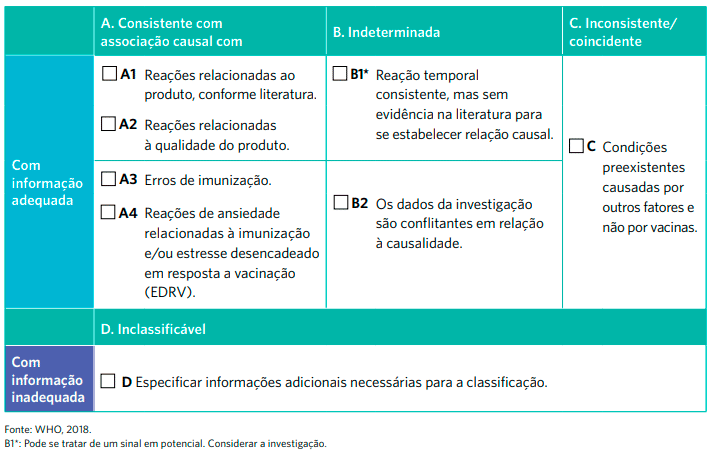

Componentes da vigilância de EAPV
Detecção e notificação
Os EAPV podem ser detectados de forma ativa, por exemplo, em pesquisas na literatura e estudos clínicos de pós-comercialização (estudos de fase IV). Contudo, a vigilância passiva é o tipo mais frequente de vigilância pós-mercado realizada em relação aos EAPV. O principal objetivo da vigilância passiva é detectar previamente eventos desconhecidos ou quaisquer alterações no perfil de notificação de EAPV conhecidos.
Os profissionais de saúde (tanto das salas de vacinação quanto de hospitais/emergências) têm a responsabilidade de detectar e notificar EAPV, assim como referenciar os pacientes para atendimento médico adequado, quando necessário. Portanto, devem estar treinados para detectar:
- todos os casos de EAPV já com critérios definidos para determinada vacina;
- cluster de EAPV (dois ou mais casos do mesmo evento adverso em relação ao tempo, local ou vacina); e
- todos os outros eventos adversos que possam estar relacionados à vacinação.
Além dos profissionais de saúde, os próprios pacientes e os responsáveis por crianças vacinadas podem reconhecer e detectar EAPV.
Todos os EAPV devem ser notificados.
As unidades notificadoras (Unidades Básicas de Saúde, salas de vacinação, Unidades de Pronto Atendimento (UPA), prontos-socorros e hospitais) realizam a primeira avaliação de um EAPV classificando-o em grave ou não grave, ou erro de imunização.
Posteriormente, a notificação é feita no SI-PNI/SI-EAPV - sistema informatizado do Programa Nacional de Imunizações (PNI) - e, no caso de eventos adversos graves ou eventos adversos de interesse especial, a investigação deve ser iniciada em 48 horas.
O PNI recebe as notificações dos profissionais de saúde das salas de vacina do sistema público de saúde. A Anvisa recebe notificações dos fabricantes, serviços privados de vacinação e de qualquer cidadão - seja ele profissional de saúde ou não. Os sistemas para notificação e formulários, entretanto, são diferentes para a população em geral, profissionais de saúde e fabricantes, permitindo uma ampla captação de eventos adversos. Os serviços de saúde da esfera privada fazem a notificação de EAPV à Anvisa.
Confira o fluxograma completo de notificação e investigação de EAPV.
Fonte: Adaptado do Manual de Vigilância Epidemiológica de Eventos Adversos Pós-Vacinação
A principal diferença entre as ações de farmacovigilância executadas pelo PNI e pela Anvisa é a fonte da notificação.
Investigação
Alguns EAPV necessitam de investigação com objetivo principal de determinar se a vacina foi ou não responsável pela ocorrência do evento. Os objetivos secundários da investigação de um EAPV são:
- confirmar diagnóstico e desfecho do EAPV;
- avaliar o processo operacional do programa de imunizações que possa ter causado o erro de imunização; pesquisar outros casos similares (cluster de EAPV); e
- comparar o risco de ocorrência de determinado evento adverso em vacinados e não vacinados.
De acordo com a OMS, devem ser investigados os eventos adversos graves; cluster de EAPV, sinais e eventos associados à uma nova vacina no mercado; EAPV que possam ter sido causados por erro de imunização; eventos adversos significativos e de causa desconhecida dentro de 30 dias após a vacinação e eventos adversos que possam causar apreensão na população.
Para que um processo de investigação seja bem-sucedido, a coleta de informações deve ser realizada criteriosamente e a mais completa possível. O envolvimento das equipes das salas de vacinação, vigilância epidemiológica, equipes assistenciais, laboratórios de referência e nível central (PNI) é essencial.
Para realizar a investigação, são coletados dados clínicos, epidemiológicos e laboratoriais, além de informações sobre o produto administrado. Pode ser necessária coleta de amostras clínicas para uma melhor elucidação do caso. É importante lembrar: se a coleta de amostras clínicas não for executada no tempo correto, pode comprometer ou inviabilizar a conclusão da investigação.
Informações necessárias para investigação de eventos adversos pós-vacinação
INFOGRÁFICO EM PRODUÇÃO!
Fonte: Oliveira e colab.(2020); WHO (2016).
Avaliação da causalidade
Avaliação da causalidade é uma revisão sistemática de dados de um caso suspeito de EAPV e visa determinar a probabilidade de uma associação causal entre eventos e vacinas recebidas. A avaliação da causalidade é a etapa mais importante e mais difícil na investigação de um EAPV cujo objetivo é determinar se existe uma relação causal entre a vacina e o evento 7,8. Em caso afirmativo, a avaliação da causalidade permite determinar o nível de certeza de tal associação.

Causalidade
É a relação entre dois eventos (causa e efeito), em que o segundo acontecimento é uma consequência do primeiro. A causa direta é um fator, na ausência do qual o efeito não ocorreria (causa necessária); às vezes, também existem vários fatores que podem precipitar o efeito (evento) ou funcionam como cofatores para que este possa ocorrer.
Os pré-requisitos para uma avaliação de causalidade são:
- A investigação do EAPV deve estar completa;
- Todas as informações relevantes devem estar disponíveis (documentos da investigação, prontuários médicos, resultados laboratoriais, e atestado de óbito, caso necessário).
- Deve haver um diagnóstico definitivo e válido para o sinal/sintoma, doença ou achado laboratorial anormal, evitando informar apenas os sintomas apresentados.
- Todas as vacinas que foram administradas antes do evento devem estar identificadas.
- Informações que podem enviesar a análise devem estar anonimizadas (nome do paciente ou do hospital, por exemplo).
A qualidade dos dados pode influenciar na avaliação da causalidade, pois informações incompletas podem considerar um EAPV inclassificável ou indeterminado devido à falta de evidências.
A investigação da relação causal entre a vacina e o EAPV é realizada em quatro etapas (Elegibilidade, Checklist, Algoritmo e Classificação) e em três níveis (populacional, individual e investigação de sinais).
Fonte: Oliveira e colab.(2020); WHO (2016).
Princípios da avaliação da causalidade em nível individual
INFOGRÁFICO EM PRODUÇÃO!
Fontes: Manual de Vigilância Epidemiológica de Eventos Adversos Pós-Vacinação (4ª ed.) e WHO (2019)
Confira as etapas de avaliação da causalidade:
Determina se casos de EAPV satisfazem os critérios mínimos para avaliação de causalidade.
Nessa etapa, deve-se:
- Confirmar a relação temporal.
- Confirmar se os casos de EAPV satisfazem os critérios mínimos para avaliação de causalidade.
São critérios mínimos:
- Ter uma suspeita de EAPV (garantir que as informações necessárias estejam disponíveis e a investigação completa, e arquivar as informações do caso em um banco de dados).
- Identificar a vacina administrada antes da ocorrência do evento.
- Ter um diagnóstico válido (selecionar sinais, resultados laboratoriais anormais, sintomas e doenças que poderiam ter associação causal com a vacina).
- Ter uma definição de caso padronizada (Ministério da Saúde, Brighton Collaboration, literatura).
É a coleta sistemática das informações disponíveis.
O checklist contém variáveis que direcionam a coleta de dados a respeito dos antecedentes pessoais, fatores de risco, antecedentes vacinais, história clínica, evolução e exames laboratoriais, entre outros, e à busca de evidências para a avaliação e classificação de causalidade.
Conheça o checklist para avaliação de causalidade:
O Checklist está na página 58 do Manual de Vigilância Epidemiológica de Eventos Adversos Pós-Vacinação (4ª ed.). Você pode baixar a imagem do Checklist aqui.
Essa etapa obtém uma tendência quanto à causalidade, a partir das informações do checklist.
Conheça o Algoritmo:
O fluxograma está na página 59 do Manual de Vigilância Epidemiológica de Eventos Adversos Pós-Vacinação (4ª ed.). Você pode baixar a imagem do fluxograma aqui.
Essa etapa categoriza a associação do EAPV com vacina, com base na tendência determinada pelo algoritmo.
O quadro de classificação do EAPV segundo a causalidade está na página 62 do Manual de Vigilância Epidemiológica de Eventos Adversos Pós-Vacinação (4ª ed.). O quadro de classificação do EAPV segundo a causalidade está na página 62 do Manual de Vigilância Epidemiológica de Eventos Adversos Pós-Vacinação (4ª ed.). Você pode baixar a imagem do quadro aqui.